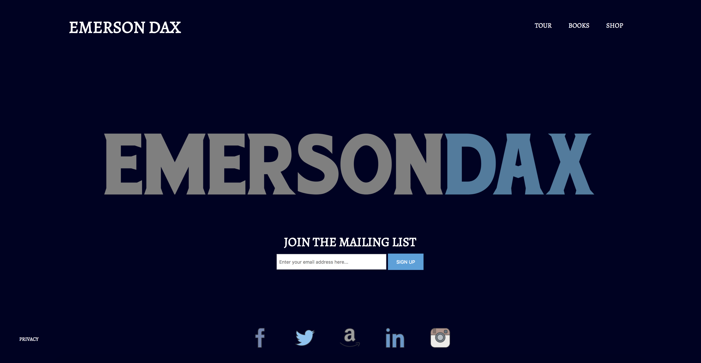

Re-skinned site for Author Emerson Dax's personal website
Click here to see the live demo! (Links disabled: NDA)
I reskinned a previous project for author Emerson Dax's personal website.
For more insight into the initial design, click here to see the TOMATOPOTATO case study..
Final Project
